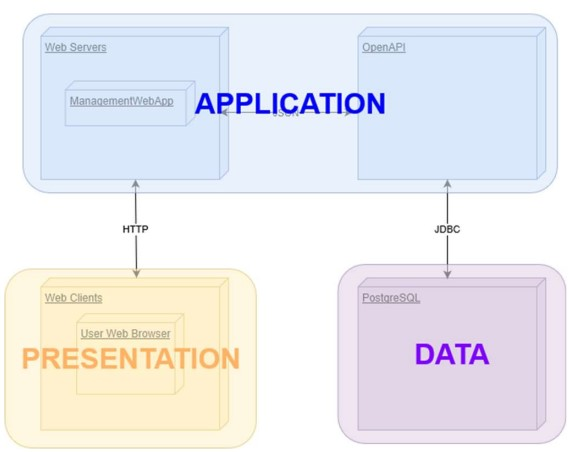
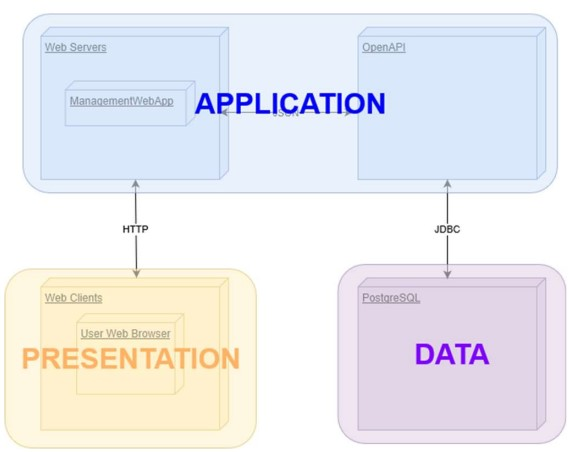

# Documentation of the Backend part
> Deliverable D1
## General group information
| Member n. | Role | First name | Last Name | Matricola | Email address |
|----------------------------------------------------------------------------------------------------
| 1 | administrator | Luca | Barsottini |10437877 |luca.barsottini@mail.polimi.it|
| 2 | member | Erbol | Kasenov |10674231 |erbol.kasenov@mail.polimi.it |
| 3 | member | Lucia | Gualdi |10545789 |lucia.gualdi@mail.polimi.it |
## Links to other deliverables
- Deliverable D0: the web application is accessible at [this address].
- Deliverable D2: the YAML or JSON file containing the specificationof the app API can be found at [this address].
- Deliverable D3: the SwaggerUI page of the same API is available at [this address].
- Deliverable D4: the source code of D0 is available as a zip file at[this address].
- Deliverable D5: the address of the online source control repository is available [this address].
We hereby declare that this is a private repository, and, upon request, we will give access to the instructors.
## Specification
### Web Architecture
Passing static page from the server to the browser we ensure them to be rendered by the same browser.
Our application is composed by a database (postgres),
a server (in Node.js) and a folder containing the static page.
A perfect representation is the one showed during lessons:
 The database is the Data-layer, while the application server is the Application-layer. The database (postgres) is managed in Heroku,
in the other hand the application server as been generated from Swagger and then finished by us.
We find a perfect representation online where is shown the level and the connection:

### API
#### REST compliance
We try to follow as mush as possible the REST paradigm:
- Client-Server: the client application and server application can evolve separately,
and we did try to remove any dependencies.
- Layered System: the system is layered, the postgres server is situated in another place in respect to server.
Session information are stored in the server.
- Code on demand: This part is trick and not so mush relevant for us because we basically send just resources in JSON format.
- Stateless: we did achieve this point. We have just GET to the server and we did not need to manage any user login.
- Uniform Interface: one of the most important one and the one that we try to follow as much as possible.
Our interface is resource base, we do have resources with relative URIs, we do have resource representation with naming
convention and the format for the GET attribute is all in JSON, the messages are self-descriptive.
#### OpenAPI Resource models
Describe here synthetically, which models you have introduced for
resources.
### Data model
Here is the ERD diagram:
The database is the Data-layer, while the application server is the Application-layer. The database (postgres) is managed in Heroku,
in the other hand the application server as been generated from Swagger and then finished by us.
We find a perfect representation online where is shown the level and the connection:

### API
#### REST compliance
We try to follow as mush as possible the REST paradigm:
- Client-Server: the client application and server application can evolve separately,
and we did try to remove any dependencies.
- Layered System: the system is layered, the postgres server is situated in another place in respect to server.
Session information are stored in the server.
- Code on demand: This part is trick and not so mush relevant for us because we basically send just resources in JSON format.
- Stateless: we did achieve this point. We have just GET to the server and we did not need to manage any user login.
- Uniform Interface: one of the most important one and the one that we try to follow as much as possible.
Our interface is resource base, we do have resources with relative URIs, we do have resource representation with naming
convention and the format for the GET attribute is all in JSON, the messages are self-descriptive.
#### OpenAPI Resource models
Describe here synthetically, which models you have introduced for
resources.
### Data model
Here is the ERD diagram:
 Is possible to observe a better version in the project repository (projectName/Dbsql/ERD.vuerd.json)
## Implementation
### Tools used
To develop the back-end application, we used:
- nodejs, connect, swagger, knex, serve-static, pg, Heroku
- postgreSQL to manage the database(postgres)
- Swagger (OpenAPI) to generate and manage the server and the specification
### Discussion
-How did you make sure your web application adheres to the provided OpenAPI specification?-
So, about our project we started from the OpenAPI specification to build the project,
during the development we continuously manipulated to keep it updated with the sate of the project.
All API operation are used on the front-end side.
-Why do you think your web application adheres to common practices to
partition a REST-based web application (static assets vs.application data)-
We do effectively separate the static resources, as html, css, js putting them on the server side.
Our data is stored in a separate space and used with specific call.
We try to find some equilibrium between static and balance and we find that our solution was best suited for our website.
-Describe synthetically why and how did you manage session state, what are the state change triggering
actions (e.g., POST to login etc..).-
We do not have a lot of state change because we have no POST or login part, so our website is composed basically with GET.
-Which technology did you use (relational or a no-SQL database) for managing the data model?-
We use PostgresSQL and it was the best way to manage data model in our opinion.
## Other information
### Task assignment
-Erbol work on front end (90%)
-Lucia work on front end (90%)
-Luca work on back end (90%)
Step by step, the implementation of each part as been explained and shared among group member in other to understand and possibly
interchange task in other to complete the project and help the part that is been implemented slowly.
### Analysis of existing API
To understand REST paradigm from the curs lesson and from https://restfulapi.net .
We start from doing the free courses from https://www.codecademy.com where we learn
by doing how to use html/css/js obviously with the support of https://www.html.it.
In order to understand API, we took full information from https://www.youtube.com/watch
from here we go to https://www.freecodecamp.org/learn
where step by step is explained what an API is and how to implement one, there are also some explanation
on how to do the back-end part and the front end of a site.
The main learning for using Swagger was from the example Pet of the editor swagger and the documentation inside.
In order to understand how to use and what is node js we did https://www.youtube.com/watch
where he explains step by step the fundamental passage to create a small app,
unfortunately using express so our learning had to go back to the module connect difficult to understand due to the lack
of site that explain it we found some video that give us some idea, but the main research was done in https://nodejs.org/it/.
For creating a database, we had to do a full tutorial from https://www.youtube.com/watch this
video base all our creation for the database and help us to understand
clearly the join between table used to pass the information in json, this information has been used in the implementation of the back end.
Needles to say that to solve our problem we constantly used https://stackoverflow.com and https://github.com.
### Learning outcome
Basically, all the member learned everything.
None of us done something related to the topic that has been discussed int these exams.
Erbol done some Cyber Security study, Luca and Erbol had some small experience in Html because of the exam:
Computer Graphics that explain the effect
that can be applied to some created figure in html but not how to create a page html.
Is possible to observe a better version in the project repository (projectName/Dbsql/ERD.vuerd.json)
## Implementation
### Tools used
To develop the back-end application, we used:
- nodejs, connect, swagger, knex, serve-static, pg, Heroku
- postgreSQL to manage the database(postgres)
- Swagger (OpenAPI) to generate and manage the server and the specification
### Discussion
-How did you make sure your web application adheres to the provided OpenAPI specification?-
So, about our project we started from the OpenAPI specification to build the project,
during the development we continuously manipulated to keep it updated with the sate of the project.
All API operation are used on the front-end side.
-Why do you think your web application adheres to common practices to
partition a REST-based web application (static assets vs.application data)-
We do effectively separate the static resources, as html, css, js putting them on the server side.
Our data is stored in a separate space and used with specific call.
We try to find some equilibrium between static and balance and we find that our solution was best suited for our website.
-Describe synthetically why and how did you manage session state, what are the state change triggering
actions (e.g., POST to login etc..).-
We do not have a lot of state change because we have no POST or login part, so our website is composed basically with GET.
-Which technology did you use (relational or a no-SQL database) for managing the data model?-
We use PostgresSQL and it was the best way to manage data model in our opinion.
## Other information
### Task assignment
-Erbol work on front end (90%)
-Lucia work on front end (90%)
-Luca work on back end (90%)
Step by step, the implementation of each part as been explained and shared among group member in other to understand and possibly
interchange task in other to complete the project and help the part that is been implemented slowly.
### Analysis of existing API
To understand REST paradigm from the curs lesson and from https://restfulapi.net .
We start from doing the free courses from https://www.codecademy.com where we learn
by doing how to use html/css/js obviously with the support of https://www.html.it.
In order to understand API, we took full information from https://www.youtube.com/watch
from here we go to https://www.freecodecamp.org/learn
where step by step is explained what an API is and how to implement one, there are also some explanation
on how to do the back-end part and the front end of a site.
The main learning for using Swagger was from the example Pet of the editor swagger and the documentation inside.
In order to understand how to use and what is node js we did https://www.youtube.com/watch
where he explains step by step the fundamental passage to create a small app,
unfortunately using express so our learning had to go back to the module connect difficult to understand due to the lack
of site that explain it we found some video that give us some idea, but the main research was done in https://nodejs.org/it/.
For creating a database, we had to do a full tutorial from https://www.youtube.com/watch this
video base all our creation for the database and help us to understand
clearly the join between table used to pass the information in json, this information has been used in the implementation of the back end.
Needles to say that to solve our problem we constantly used https://stackoverflow.com and https://github.com.
### Learning outcome
Basically, all the member learned everything.
None of us done something related to the topic that has been discussed int these exams.
Erbol done some Cyber Security study, Luca and Erbol had some small experience in Html because of the exam:
Computer Graphics that explain the effect
that can be applied to some created figure in html but not how to create a page html.